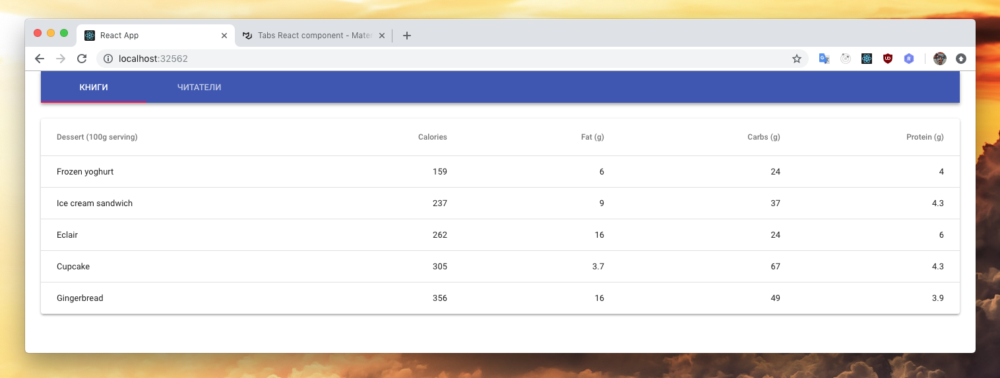
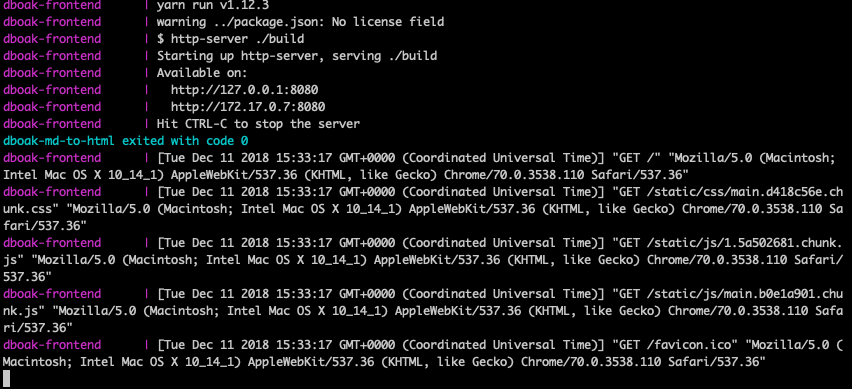

Онлайн версия доступна по ссылке
Добавляем в наш docker-compose.yml файл описание нового контейнера.
dboak-frontend:
container_name: dboak-frontend
depends_on:
- dboak-backend
links:
- dboak-backend
build:
context: ./frontend
dockerfile: ./Dockerfile
restart: "no"
environment:
- NODE_ENV=production
network_mode: bridge
ports:
- '32562:8080'
logging:
options:
max-size: '50m'Для того, чтобы можно получить доступ к приложению в контейнере, нужно установить сервер
Выполним команду yarn add static server из директории frontend
Создадим докер файл приложения frontend/Dockerfile
FROM node:lts-slim
WORKDIR /opt/app
COPY package.json yarn.lock ./
RUN yarn --frozen-lockfile
COPY public/ ./public
COPY src/ ./src
EXPOSE 8080
RUN yarn build
ENTRYPOINT ["yarn", "serve"]Файлы миграции находятся в папке ./postgres/migration/ Создадим один файл с первой миграцией и добавим в него содержимое
#!/bin/bash
set -e
psql -v ON_ERROR_STOP=1 --username "$POSTGRES_USER" <<-EOSQL
CREATE USER library;
GRANT ALL PRIVILEGES ON DATABASE library TO library;
EOSQLЭта миграция создаст пользователя "library" и даст ему проставит права доступа внутри БД
docker-compose up --build
Ждём пока скачается образ, загрузятся зависимости. Первый раз для каждого контейнера это длительный процесс. Ожидаем в консоли:
dboak-frontend | Starting up http-server, serving ./build
dboak-frontend | Available on:
dboak-frontend | http://127.0.0.1:8080
dboak-frontend | http://172.17.0.7:8080
dboak-frontend | Hit CTRL-C to stop the serverМожно будет проверить результат работы приложения в контейнере по адресу: http://localhost:32562

